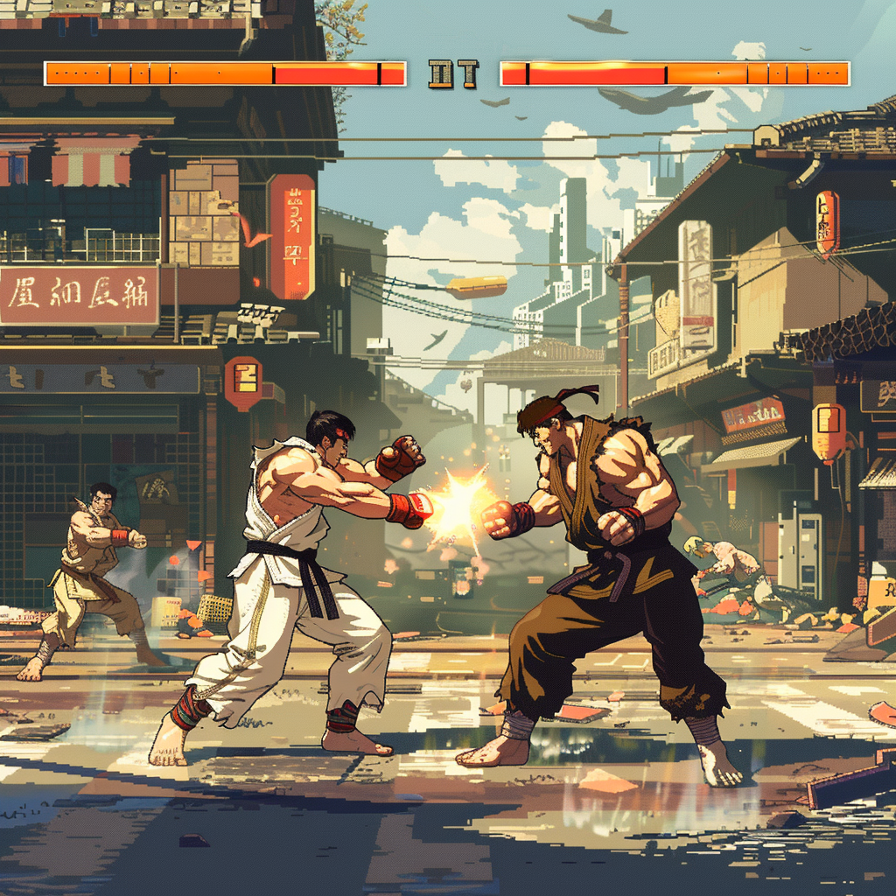
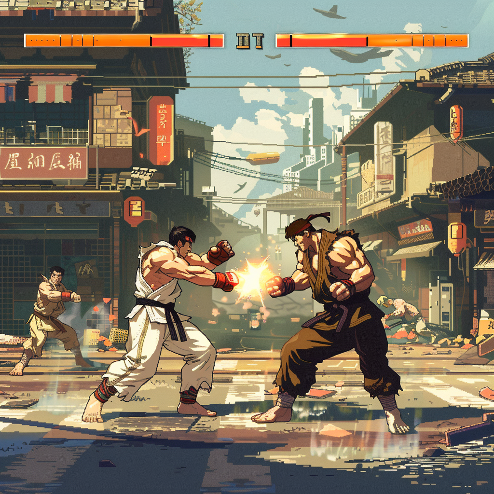

Showcasing Animation, 3D Assets,Graphic Illustrations & Games

Showcasing Animation, 3D Assets,Graphic Illustrations & Games
In a serene and dreamlike setting, an adorable astronaut figure stands in a shallow pool of water, surrounded by a surreal landscape. Soft, ambient light reflects off the water's surface, creating a gentle glow around the astronaut. The background is filled with floating, ethereal orbs and delicate plants that add to the otherworldly atmosphere.The scene captures a moment of tranquility and wonder, as the astronaut seems to be exploring this magical environment, mesmerized by the floating orbs and the reflections dancing on the water. This peaceful and enchanting animation, lasting around 10 seconds, would depict the astronaut looking around curiously, reaching out to touch one of the glowing orbs, and watching as it gently floats away, leaving ripples in the water.
A close-up shot of an animated character playing in a water park on indoor slides, splashing with joy. The focus is on the character's face in the style of Pixar, with a colorful background, bright colors, soft lighting, and high resolution 3D rendering with rich details. The character has a happy expression amid a lively atmosphere

A whimsical and colorful bird with vibrant feathers, in the style of Pixar, in the style of Disney animation, with a red beak and tail, in an enchanted forest setting, surrounded by lush greenery and magical creatures. Focus on depth of field, with a blurred background, detailed textures, soft lighting, in the style of fantasy art, in a close-up shot, as a portrait, with a playful expression, and a cute character design.

A cute boy in a suit and tie is standing next to his robot friend. They both have short hair and big eyes and look happy in a conversation about something exciting. Behind them is an old factory with various tools and machinery. Everything has been drawn in the style of Pixar and the scene should be in a 3D animation style.
3D render of a landscape made of red mountains, clouds and pink spheres floating in the air, rendered in Cinema4D, with a cute cartoonish design and dreamy atmosphere. Soft lighting and a bold use of lines create a vibrant color palette in a highly detailed style. This is a Zoom in camera motion animation of the environment.
3D render of a landscape made of red mountains, clouds and pink spheres floating in the air, rendered in Cinema4D, with a cute cartoonish design and dreamy atmosphere. Soft lighting and a bold use of lines create a vibrant color palette in a highly detailed style. This is a Zoom in camera motion animation of the environment.

A giant robot with glowing red eyes stands on the edge of an old abandoned city, the night sky in the background. A small boy stands next to it, looking up. The scene has a dark and gritty vector art style in the manner of a detailed anime illustration, using bold colors, high resolution, high detail, and high contrast sharpness.
A cartoon forest at night with purple and pink clouds, a stream flowing through the trees in a cartoon style using simple shapes and simple colors. The vector art has low details and a flat design. It is a digital painting with high resolution showing a wide angle and close up view of the forest with a centered composition and everything in focus with a deep field of view. There is snow on the ground and it is a very detailed fantasy concept art with vibrant and dramatic lighting. The dark background is in the style of Studio Ghibli.


 
